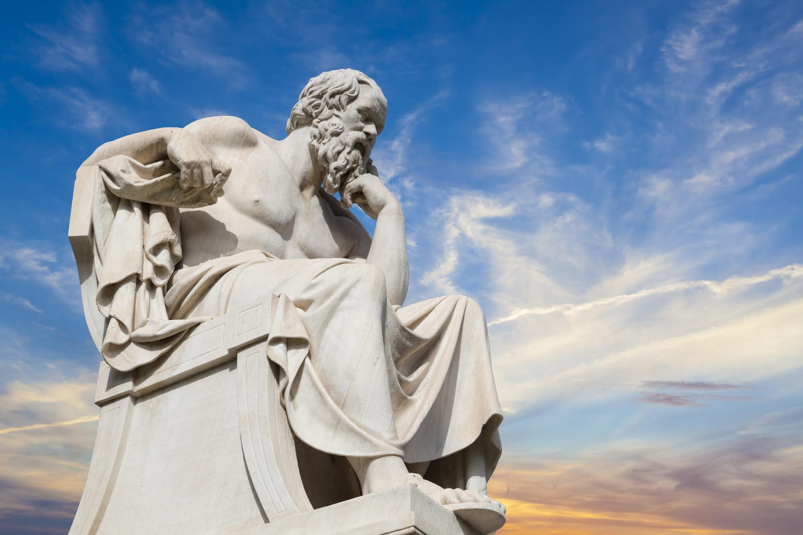

Welkom op de website voor de sinterklaasvierder met een open geest

Hier zult u de werken van grote literaire meesters zoals Sint, Piet, Americo en nog vele meer aantreffen.
Geniet van een geestelijk avontuur.
Gedachten Gedrukt
Gedachten Gedrukt
Intro
De wereld staat op het randje van de verdoemenis maar gelukkig is er altijd nog dit geweldige boek GEDACHTEN GEDRUKT DOOR SINT EN PIET om op terug te vallen. Bekende dichters hebben hun krachten gebundeld en dit meesterwerk bij u op de plank gekregen. Dit meesterwerk bevat het beste van onder andere SINT, PIET en AMERIGO en bundelt zowel de klassiekers zoals ‘Het futuristische beeld op de boosdoeners van nu’ en ‘zoek niet, vind’ als de nieuwe kunstwerken ‘Ode aan Sam’ en ‘Piet’. Ervaar nu de wijsheid die schuilgaat achter deze gouden paginas en verlos je ziel van de rotte moestuin die in ons allen schuilgaat.
Het futuristische beeld op de boosdoeners van vandaag
Hoewel de ochtendzon nog zo lang schijnt op het uitgestorven graf van moeder aarde. Nooit en te nimmer zal men heen gaan na een maaltijd van spijs en viool laten de alvaderen in hun waarde. De bedorven zielen van hen die dit verdoezelen of wegmoffelen zullen eeuwig branden in de kooi van de vergetelheid en dwaze straffen zullen worden toegekend aan nog dwazere misstappen. Toch zal het geschal van de hoorn van de hoge heren over de zee rollen op zoek naar de ontvanger die men nooit vinden zal en met geweld komen loze klappen. Ondanks de vreemde gedrochten die via de luchtreizen en de slapende boze geesten zullen ontwaken in de haast de vrijheid te zoeken buiten deze zonnestraal. Echter zal de zoektocht staken na een opeenhoping van emoties die de mensen van de zon zullen onderscheiden en afzonderen tot de vondst van de heilige graal.
-SINT
Piet
Piet zat op het dak. En keek in zijn zak. Eint -SINT
De zin van het leven op de vijfde december
Sint Piet Pepernoot Pakjesboot 12 -PIET
Zoek niet, vind
Toen de dageraad aanbrak en de eerste zonnestralen over de wolken kropen om door het haar van een pasgeboren kind te woelen. En daarna terug te kaatsen over de heuvels, onder de bomen en door de hollen van de konijnen die vanochtend nog hun dood vonden in de bek van een sluwe vos. Zonder dat ze het kwaad ooit in de ogen hebben gekeken. Of ook maar besefd dat er nog werelden zijn die boven hen staan. Zonder dat er ooit op aarde met een woord over gesproken word of er ook maar aan gedacht wordt door de mens. De mens is echter een raadsel zo onmogelijk op te lossen als rook te vangen is met een vergiet van puur zonlicht. Of water te drinken is zonder mond of de bloemen van een plant grijpen naar een enorme gloeilamp die symbool staat voor het grote licht dat god gebruikt om de monsters die met de zondvloed zijn omgekomen te defuseren en absorberen zodat de wereld gezuiverd blijft en terwijl god almachtig bleef keek Piet nog eens in zijn zak!
-SINT
De verdoemenis der universum
In het grote niks om onze bol van misdaad en verdriet vallen de zonnestralen die zo hoopvol van de grote ster vertrokken in het diepe duistere niks. God almachtig zal deze niet tegenhouden noch terugsturen zolang de zin van het leven onbekend blijft bij het gewone volk en de heilige heren die boven hen die de nacht in angst moeten doorbrengen staan. De afgezonderden zouden hulp moeten ontvangen van de geesten die de rijke en de bevorderde priesters bezitten en de uitstraling van de zon zal doven zodra de diepe dalen scheuren en de wereld zal rood kleuren van het bloed en het vuur maar de derde ochtendstond betekent het bittere. Maar langverwachte einde van moeder aarde, mag zij eeuwig rusten in het zonovergote graf van het helal.
-SINT
Dankzij de kracht van deze levensloop, verliezen we de macht over chaos van deze prachtige zonsondergang. Het kerkhof dat moeder aarde is heeft een hoge betekenis voor onze vaderen die ons al wel besturen en ons laten genieten in dit spijs van het leven. Waar we heelhuids thuis aan mogen komen. In deze zoektocht naar antwoorden waar we worden geleid door het licht in deze donkere woestenij, waar we langzaam vergeten wie we zijn.
-Amerigo
Het Einde
Dit was het einde van het boek. Dus wordt het weer een driehoek. -Piet, Sint & Amerigo